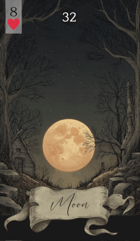

第 32 张 · 红桃 8
月亮
情感
声誉
认可
直觉
梦境
月亮照亮情感与声誉，强调直觉，也强调梦境揭示隐秘真相的力量。这张牌请你去看清自己深处的感受，以及别人眼中的你。
免费抽牌 →
在雷诺曼中，月亮代表情感、梦境与直觉。它引导你留意自己的内心世界，以及周遭那些细微的讯号。这张牌常在情绪格外敏感的时候出现，也常在你的努力即将被看见时出现。月亮指向一种更深的觉察，提醒你别只停在明面上的东西。
这张牌同样关乎别人如何看你，关乎你的公众形象。它提示你留意自己的声誉，留意你在人群中留下的印象。月亮出现时，不妨想一想：内心的感受与外在的呈现是否一致，梦境又在怎样牵引你的行动与选择。
在感情占卜里，月亮说的是深层的情感连接，以及伴侣之间那种不必言明的理解。它意味着一段情绪浓烈的时期，水面下的暗流需要被正视。若你单身，它暗示可能出现一个与你内心共振的人，一个欣赏你本来样子的人。留心梦境，也留心那些细微的提示，它们会指引你的感情走向。
在事业的语境下，月亮意味着努力被看见、被承认。它暗示你的才能或付出正受到注意，可能带来地位或声望的上升。这张牌也提醒你职场中的情绪影响，要在直觉与理性判断之间取得平衡。处理同事关系与机会时，可以信任自己的直觉。
相信直觉，也让内心的感受有说话的余地。月亮建议你去探究自己的梦与情绪，它们握着理解当下处境的钥匙。想一想别人眼中的你，以及你的外在行动是否映照出真实的自己。用这份洞察去调整你的个人形象与公众形象。
在雷诺曼解读中，月亮的含义会被相邻的牌塑形，让情感与声誉的主题落到具体情境里。以下是月亮与牌组中其余每张牌的组合：
传统牌面上，月亮是一弯新月，把柔和的光洒在大地上。这幅画面唤起夜晚那种神秘而内省的气质——直觉在此当家，情绪也被放大。月光暗示一个属于梦、属于幻象的领域，明与暗在其中细细交替，既揭露，也遮掩。